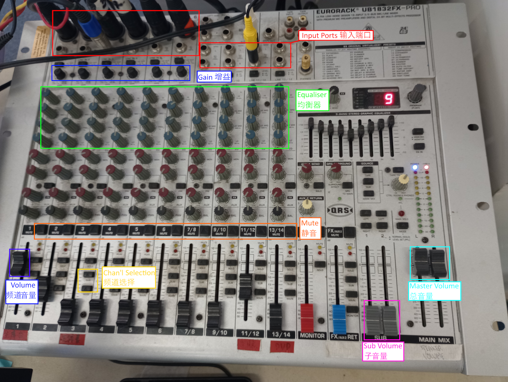

The sound system is arranged as follows. All inputs (ie. anything that can make sound) are plugged into the mixer. From there, the mixer mixes all of these inputs into one ouput, which goes to the amplifier and then to the two ceiling mounted speakers. 中文堂的音响系统是这样的： 所有输入（就是任何能发出声音的设备）都连插进去调音台。 调音台会混合所有这些声音成一个输出，给放大器，然后到两个吸顶式音箱。
We currently have three wired microphones, which are usually already plugged in. They plug in via a XLR cable to a box near the piano, which then is connected via underfloor cables to the mixer. You will see each port on the box is labelled from 1-8. These are plugged into channels 1-6 on the mixer (there is no space to plug in 7-8). We usually use channels 1-3. To disconnect a XLR cable, you will need to push the little button on the socket. Tip: if the microphone is not picking up the speaker, move it closer to their mouth. Increasing to max volume on the mixer will NOT work. 我们现在有个三有线话筒，平时是已经插好的。 它们通过XLR线连到钢琴旁边的盒子。从这里有地下线连去调音台。 你会看到盒子的每一个端口都有一个数字从1到8。这些端口是连去调音台的1-6频道。 (我们的调音台没位置插7和8) 通常我们会用1到3频道。 提示：如果麦不接收讲员的话（或很小声），把麦克风移近一点讲员的口。把调音台的音量调到最大不会解决这个问题。
We also have one wireless microphone, however it does not work reliably so it is not currently used. 我们还有一个无线话筒，不过它经常出现问题所以我们很少用。
Finally, we have the computer, which may output sound if we are playing a video or similar. The computer is connected to the mixer via an audio cable from the headphone port on the computer to channel 11/12 on the mixer. 最后，我们有一台电脑，可以用来放视频。电脑是通过一条音频线，从耳机端口
As described above, each input goes into the mixer, specifically a channel. Each channel has its own controls on the mixer, arranged in a column. 如以上描述，每一个输入进去调音台的一个频道。每一个频道有自己的控制，排成一列。
From top to bottom, these are the controls: 从上到下，有这些控制：
The sub volume slider allows the volume of a selected group of channels (all where the the 'sub' button has been pressed) to be controlled together. We do not currently need to use it. 子音量滑块是用来统一控制部分频道（所有按下sub按钮的频道）的音量。 我们现在没有需要用。
The main volume slider allows the volume of all channels to be controlled together. It should be kept between the two rectangles. 总音量滑块是用来统一控制所有频道的音量。 一般应该留在两个长方形之间。
